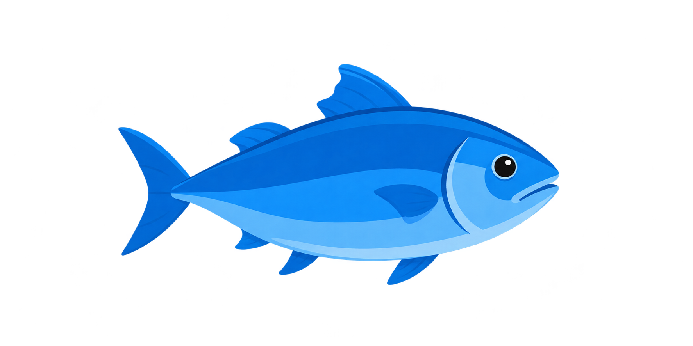
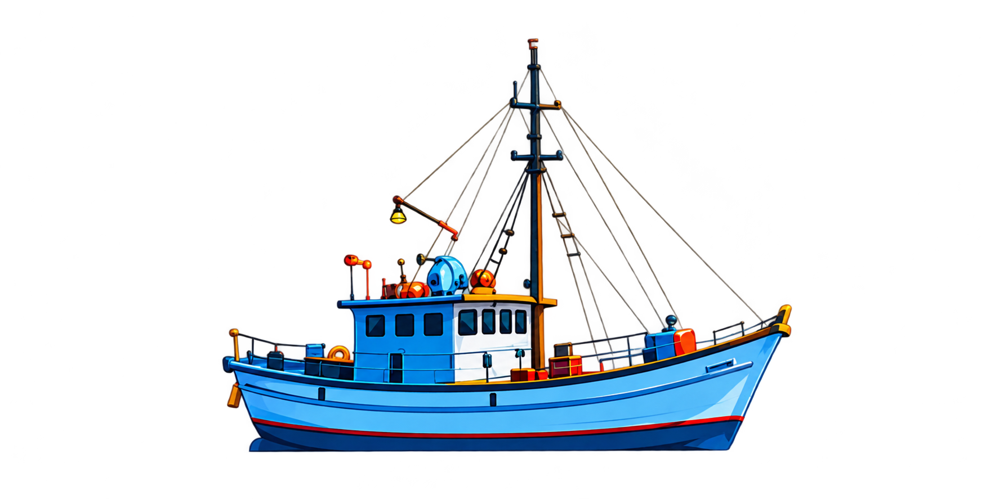
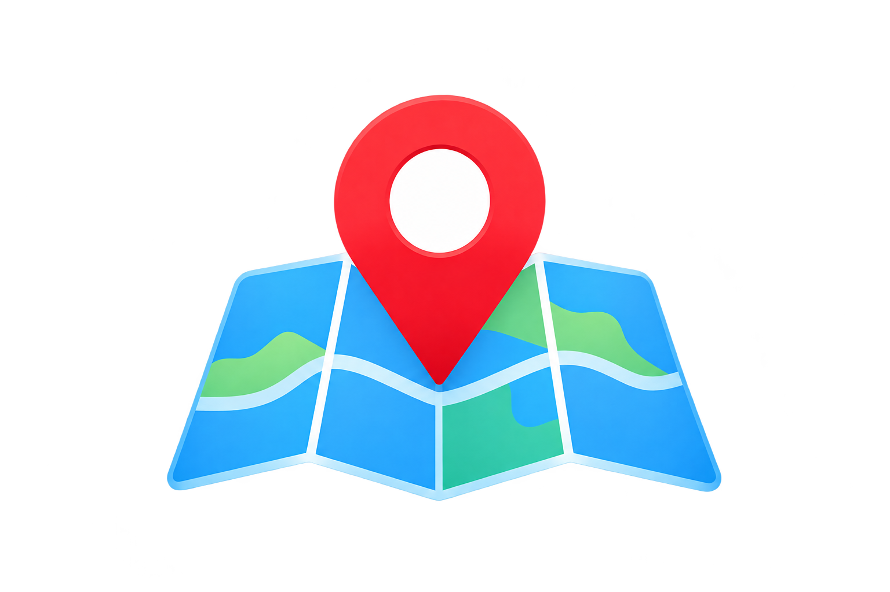

Nelayan: Salmin
Online
Tentang SIPIKA
SIPIKA adalah sistem berbasis web yang digunakan untuk mengklasifikasikan tingkat produksi ikan tangkapan di Maluku Utara berdasarkan jenis ikan, alat tangkap, wilayah, dan musim.
Faktor yang Digunakan

Jenis Ikan
Data jenis ikan
yang ditangkap

Alat Tangkap
Data alat tangkap
yang digunakan

Wilayah
Lokasi penangkapan
ikan
Musim
Musim penangkapan
ikan
Hasil Klasifikasi
Kategori output tingkat produksi ikan tangkapan
Rendah
Tingkat produksi rendah
Sedang
Tingkat produksi sedang
Tinggi
Tingkat produksi tinggi